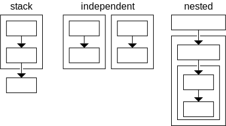

stacks
In Eunice, when it's intended that an item be dependent on another, the first item is placed above the second in a stack. When items are intended to be independent of each other, they can be placed at the same level in a stack.
The terminology "stack" is used as dependencies can only be uni-directional (in one direction). Eunice also identifies when there is a indirect bi-directional dependency (see diagram).

Eunice is designed to be non-prescriptive so problem specific stacks can develop naturally and collaboratively. Stacks can also be used to represent more general architectures (e.g. as layers). Learning about such architectures can also be beneficial when defining problem specific Eunice stacks.
In some programming languages there are implied stacks, such as the order of functions in a file, or the order of files in a project.
scopes / groups
Stacks are defined in Eunice with different sized scopes and across boundaries, from individual functions, classes and files; to multiple, large codebases in different languages, frameworks and runtimes.
Eunice supports nested groups of items, each group can have its own stack. When Eunice measures whether dependencies match the intended structure, the results for nested groups are summarized (see dependencies).

Programming languages usually include ways of grouping code, such as the directories in a file system, namespaces, classes or nested functions. Groups such as these can be inferred and automatically represented in Eunice. Multiple repositories, packages, services and systems can also be represented as groups and analyzed as a together.